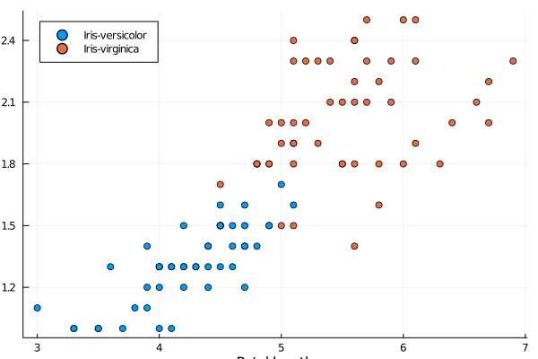
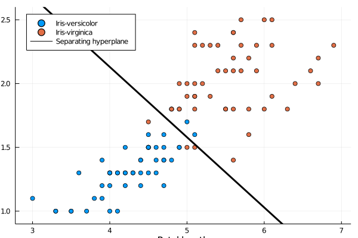

Logistic regression
The previous part dealt with predicting a continous variables. This part will handle predicting one of two classes.
Load the data as before
using BSON: @load
file_name = joinpath("data", "iris.bson")
@load file_name X y y_nameThe data contain three classes [1 2 3]. However, in the theory we considered only binary problems with two classes. We therefore cheat.
Write function modify_data which converts X and y into binary dataset in the following way: label 1 will be deleted, label 2 will be the negative class and label 3 will be the positive class. For X consider only columns 3 and 4. This will create a two-dimensional feature vector, which will enable nice visualizations.
Solution:
Since we want to keep $y\in\{2,3\}$, we store the indices into i. Then we consider reduce X, y and y_name into the correct rows and columns.
function modify_data(X, y, y_name)
ii = y .> 1.5
return X[ii,3:4], y[ii] .> 2.5, y_name[2:3]
endFinally, we call the function
X, y, y_name = modify_data(X, y, y_name)When designing a classification method, a good practice is to perform an analysis of the data. That may include checking for NaNs, infinite values, obvious errors, standard deviations of features or others. Here, we only plot the data.
Since X has two features (columns), it is simple to visualize. Use scatter plot to show the data. Use different colours for different classes. Try to produce a nice graph by including names of classes (in y_name) and axis labels (petal length and petal width).
Solution:
This should be known by now. The only possibly unknown command is legend=:topleft to move the legend to the top-left corner.
using Plots
scatter(X[y.==0,1], X[y.==0,2], label=y_name[1], legend=:topleft,
xlabel="Petal length", ylabel="Petal width")
scatter!(X[y.==1,1], X[y.==1,2], label=y_name[2])/home/runner/.julia/packages/GR/RlE5Y/src/../deps/gr/bin/gksqt: error while loading shared libraries: libQt5Widgets.so.5: cannot open shared object file: No such file or directory connect: Connection refused GKS: can't connect to GKS socket application GKS: Open failed in routine OPEN_WS GKS: GKS not in proper state. GKS must be either in the state WSOP or WSAC in routine ACTIVATE_WS

We see that the classes are almost perfectly separable. It would not be difficult to estimate the separating hyperplane by hand. However, we will do it automatically.
Write a function log_reg which takes as an input the dataset, an initial point and uses the Newton's method to find the optimal weights $w$. Print the result when started from the zero point.
It would be possible to use the code optim(f, g, x, s::Step) from the previous lecture and define only the step function s for the Newton's method. However, sometimes it may be better to write simple functions separately instead of using more complex machinery.
Solution:
To write the desired function, we need to implement the gradient and Hessian from derived in the theoretical lecture. First we need to create $\hat y$. We may use for loop notation [1/(1+exp(-w'*x)) for x in eachrow(X)]. However, in this case, it is simpler to use matrix operations 1 ./(1 .+exp.(-X*w)) to get the same result. The gradient can be written in the same way. Again, there are two ways, we use the matrix notation. For the Hessian, we first create X_mult = [row*row' for row in eachrow(X)] which computes all products $x_ix_i^\top$. Note that this is outside the for loop for iterations, as it can be computed only once. This will create an array of length $100$, each element of this array will be a $2\times$ matrix. Since it is an array, we may multiply it by y_hat.*(1 .-y_hat). Since mean from the Statistics package operates on any array, we can call it (or similarly sum). We may use mean(???) but we find the alternative ??? |> mean more readable in this case. To update we use hess \ grad as explained in the previous lecture for the Newton's method.
using Statistics
function log_reg(X, w; max_iter=100)
X_mult = [row*row' for row in eachrow(X)]
for i in 1:max_iter
y_hat = 1 ./(1 .+exp.(-X*w))
grad = X'*(y_hat.-y) / size(X,1)
hess = y_hat.*(1 .-y_hat).*X_mult |> mean
w -= hess \ grad
end
return w
endAfter the tough work, it remains to call the it.
w0 = zeros(size(X,2))
w_wrong = log_reg(X, w0)The name w_wrong suggests that something is wrong. The problem is that the logistic regression was called with the original dataset. However, in doing so, there is no intercept. For this reason, we need to modify X first by including the column of all ones and then calling it again.
X_ext = hcat(X, repeat([1],size(X,1)))
w = log_reg(X_ext, zeros(size(X_ext,2)))Hooray, this time it is correct.
If you obtained
[-2.0041, 6.1127]
the function for solving the logistic regression is correct. But you call it in a wrong way. The correct solution is
[5.7545, 10.4467, -45.2723]
We can now show the solution. Since the intercept is the third component (therefore $x_3=1$), the separating hyperplane takes form
\[w_1x_1 + x_2x_2 + w_3 = 0.\]
To express it as a function, we obtain
\[\operatorname{sep}(x_1) = \frac{-w_1x_1 - w_3}{w_2}.\]
Now we plot it.
scatter(X[y.==0,1], X[y.==0,2], label=y_name[1], legend=:topleft,
xlabel="Petal length", ylabel="Petal width")
scatter!(X[y.==1,1], X[y.==1,2], label=y_name[2])
f_hyper = x -> (-w[3]-w[1]*x)/w[2]
x_lim = [minimum(X[:,1])-0.1; maximum(X[:,1])+0.1]
plot!(x_lim, f_hyper.(x_lim), label="Separating hyperplane", line=(:black,3),
ylim=(minimum(X[:,2])-0.1,maximum(X[:,2])+0.1))/home/runner/.julia/packages/GR/RlE5Y/src/../deps/gr/bin/gksqt: error while loading shared libraries: libQt5Widgets.so.5: cannot open shared object file: No such file or directory connect: Connection refused GKS: can't connect to GKS socket application GKS: Open failed in routine OPEN_WS GKS: GKS not in proper state. GKS must be either in the state WSOP or WSAC in routine ACTIVATE_WS

This is the optimal solution obtained by the logistic regression. Since the norm of the gradient
using LinearAlgebra
y_hat = 1 ./(1 .+exp.(-X_ext*w))
grad = X_ext'*(y_hat.-y) / size(X_ext,1)
norm(grad)4.499770257220964e-16
equals to zero, we found a stationary point. It can be shows that logistic regression is a convex problem and therefore, we found a global solution.
The picture shows that there are misclassified samples. The mext example analyses them.
Print how mnay samples were correctly and incorrectly classified.
Solution:
Since $\hat y_i$ is a probability that sample is of the positive class, we will predict that it is positive if this probability is greater than $\frac 12$. Then it suffices to compare the predictions pred with the correct labels y.
pred = y_hat .>= 0.5
"Correct number of predictions: " * string(sum(pred .== y))
"Wrong number of predictions: " * string(sum(pred .!= y))There is an alternative (but equivalent way). Since the separating hyperplane is of form $w^\top x$, we predict that a sample is positive whenever $w^\top x\ge 0$. Write the code and try to reason why these two approaches ar equivalent.
The correct answer is
Correct number of predictions: 94 Wrong number of predictions: 6